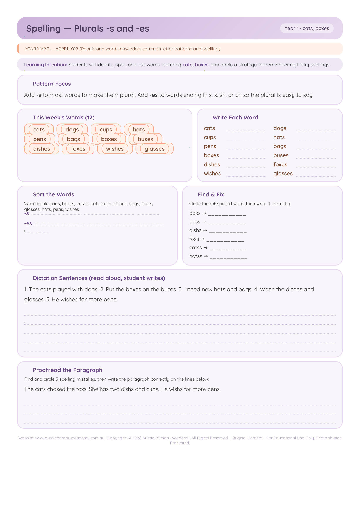

Year 1 · English · Spelling · Free Printable
Plurals: -s and -es
Practise forming plurals with -s and -es endings.
Worksheet Preview

Learning Intention
Students will form plurals using -s and -es correctly.
Australian Curriculum
Supports Year 1 English literacy and spelling learning. (AC9E1LY11)
Teacher Notes
Sort words that take -s versus -es (e.g. boxes, brushes). Practise reading and writing both forms.
Skills Practised
- Plural endings
- Spelling rules
- Word reading
- Morphology